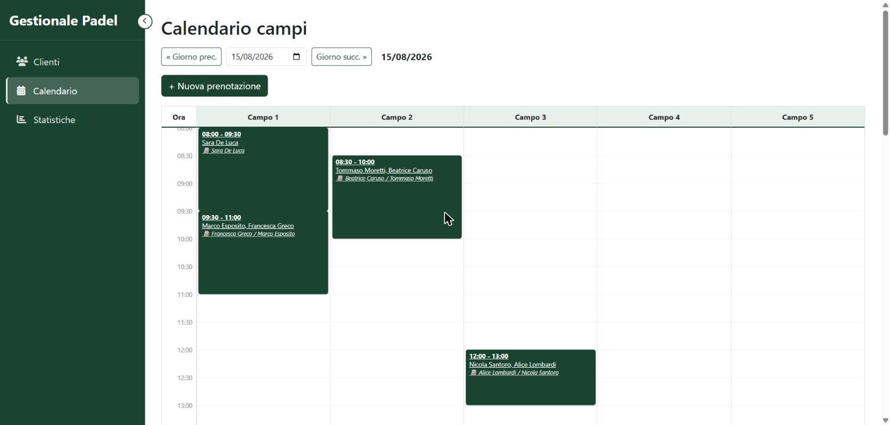
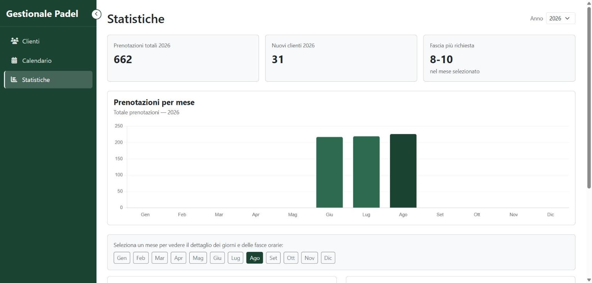
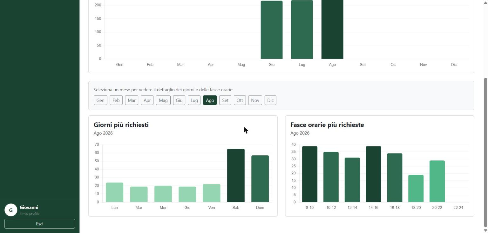
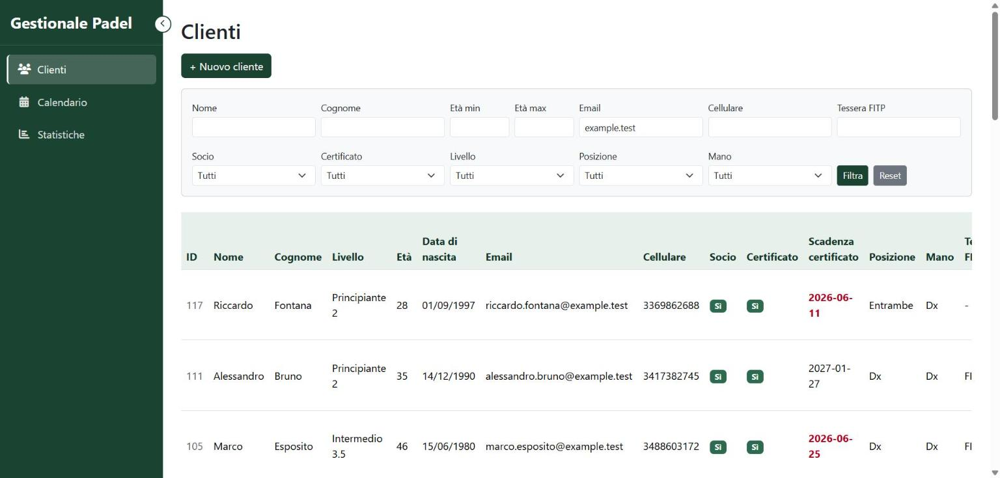
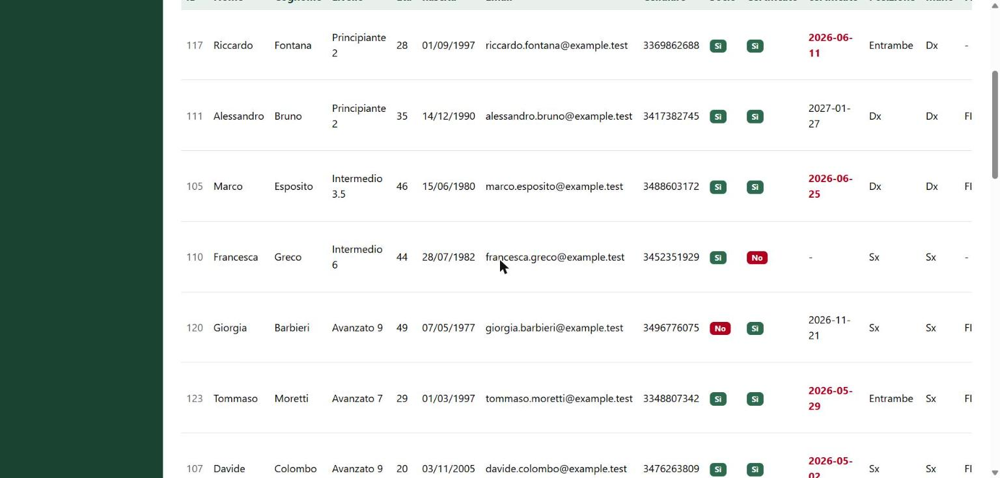

Case study · Gestionale
Pinea Padel: gestionale campi da padel
Un centro sportivo che gestisce campi da padel deve controllare disponibilità, prenotazioni e anagrafica clienti senza affidarsi a fogli Excel o processi manuali. C'è poi un problema specifico di questo sport in Italia: tenere traccia di certificati medici e tessere FITP in scadenza, per sapere sempre chi può giocare e chi deve rinnovare. Ho costruito un'applicazione full-stack in PHP orientato agli oggetti, con MySQL, per coprire tutto questo in un unico gestionale.

Il contesto
La gestione manuale di orari e campi è soggetta a doppie prenotazioni e fraintendimenti. Senza uno strumento dedicato, il centro non ha visibilità su quali clienti hanno certificato medico o tessera FITP scaduti, né statistiche sull'utilizzo dei campi utili a decisioni gestionali, ad esempio valutare nuovi orari o promozioni nelle fasce meno richieste. Il gestionale è pensato per essere usato da reception/segreteria su schermo desktop, dove viene gestita la maggior parte delle prenotazioni e dell'anagrafica: l'interfaccia è ottimizzata per quell'uso, non per il mobile.
Calendario e prenotazioni
Una vista calendario per campo e data permette di vedere subito la disponibilità, assegnare i giocatori a ogni prenotazione e prevenire sovrapposizioni tra fasce orarie.

Vista giornaliera per campo, con i giocatori assegnati a ogni prenotazione.
Statistiche
Una dashboard aiuta il gestore a capire l'andamento dell'attività (prenotazioni per mese, giorni della settimana e fasce orarie più richieste), invece di doverlo dedurre a occhio da un registro cartaceo.


Anagrafica clienti
Nel padel agonistico/FITP ogni giocatore deve avere certificato medico e tessera FITP validi. Il gestionale evidenzia in rosso le scadenze passate, così lo staff non deve controllare manualmente cliente per cliente, e permette di filtrare e cercare l'anagrafica.

